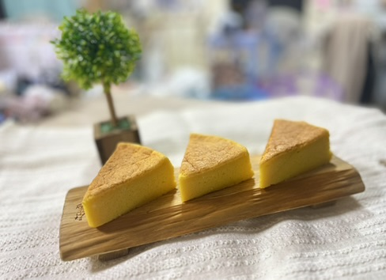
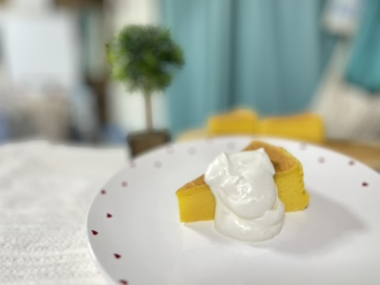

PUMPKIN
かぼちゃ
ほっくり濃厚。野菜の甘みがふわりと広がります。
SCROLL

OUR STORY
野菜の自然な色と、やさしい甘みを生かしたチーズケーキです。濃厚すぎず、ふわっと軽い「ふわしゅわ」食感に焼き上げました。
小さなお子さまからご年配の方まで、家族みんなで囲めるように。毎日を少しだけ健やかに、あたたかくするおやつを目指しています。
OUR PROMISE
余計なものに頼らず、素材そのものの香りや色を大切にしています。
できるだけ自然に育った食材を選び、ひとつずつ丁寧に仕込みます。
かぼちゃ、にんじん、小松菜。野菜ごとの個性を、やさしいおやつに。
ONLINE ORDER
店舗販売は行わず、月1回のオンライン受注販売でお作りしています。ご注文をいただいてから心を込めて焼き上げ、ご自宅へお届けします。
POP-UP MARCHE
出店予定はInstagramでお知らせします。
見かけたら、ぜひ気軽に声をかけてくださいね。
FOLLOW US
販売日・季節のフレーバー・マルシェ出店情報を発信中です